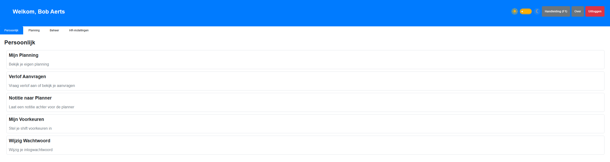

Inhoud
1. Welkom
Welkom bij de Planning Tool, een roosterapplicatie speciaal ontwikkeld voor self-rostering teams. Deze tool helpt je met:
- 📅 Efficiënt plannen van diensten
- 🏖️ Beheren van verlofaanvragen
- ✅ Automatische validatie volgens HR-regels
- 📊 Overzichtelijk beheer van shift codes en werkposten
- 🔄 Historiek van planning wijzigingen
2. Aan de slag
2.1. Eerste keer inloggen
Standaard login:
- Gebruikersnaam:
admin
- Wachtwoord:
admin
⚠️ Belangrijk: Wijzig het admin wachtwoord direct na eerste login via Persoonlijk → Wijzig Wachtwoord.
2.2. Bestandsstructuur
Bij de eerste opstart worden automatisch de volgende folders aangemaakt:
PlanningTool_v0.6.15.exe (de applicatie)
├── data/ (database en applicatiedata)
│ └── planning.db
├── exports/ (Excel exports voor HR) ⭐ NIEUW
│ ├── oktober_2025.xlsx
│ └── november_2025.xlsx
├── PROJECT_INFO.md (project informatie)
└── HANDLEIDING.md (deze handleiding)
Belangrijke folders:
- data/ - Bevat de database (maak regelmatig backups!)
- exports/ - Automatisch gegenereerde Excel bestanden bij planning publiceren
2.3. Interface navigatie
Na inloggen zie je het Dashboard, afhankelijk van je rol krijg je meer tabs te zien.
Voor Teamleden:
1 tabblad Persoonlijk met volgende zaken
- Planning Hier kan je de planning opvragen van gepubliceerde maanden
- Verlof aanvragen Je verlofaanvragen (met saldo weergave)
- Notitie naar Planner Hier kan je berichten sturen naar de planners
- Mijn Voorkeuren Stel hier je shiftvoorkeuren in.
- Wachtwoord wijzigen

Een screenshot van het dashboard voor planners

Voor Planners:
- Beheer - Typetabellen, Shift codes, Gebruikers, Verlof & KD Saldo Beheer
- Planning - Planning editor, Verlof goedkeuring (met VV/KD type selectie)
- Instellingen - HR regels, Feestdagen, Rode lijnen
- Persoonlijk - Mijn Voorkeuren (shift voorkeuren, nieuw v0.6.11), Wachtwoord wijzigen, Dark Mode (nieuw v0.6.12)
3. Sneltoetsen
| Toets |
Functie |
| F1 |
Deze handleiding openen (werkt in alle schermen) |
4. Rollen en rechten
Planner
Volledige controle over planning:
- Planning maken en wijzigen voor alle teamleden
- Verlofaanvragen goedkeuren of afwijzen
- Gebruikers beheren (toevoegen, bewerken, deactiveren)
- Shift codes en werkposten configureren
- HR-regels en instellingen aanpassen
- Typetabellen beheren
Teamlid
Persoonlijke planning beheer:
- Eigen planning bekijken
- Verlof aanvragen (met saldo weergave)
- Shift voorkeuren instellen (v0.6.11)
- Dark mode kiezen (v0.6.12)
- Wachtwoord wijzigen
5. Belangrijke concepten
5.1. Typetabel (Diensttabel)
Een typetabel is een herhalend patroon van diensten dat zich automatisch herhaalt.
Kenmerken:
- Lengte: 1 tot 52 weken
- Elke gebruiker heeft een startweek (1 t/m N)
- Startweek bepaalt waar iemand in het patroon begint
- Gebruikt voor automatische roostergeneratie
Voorbeeld:
Week 1: V1, V2, V1, V2, L1, RX, RX
Week 2: V2, V1, V2, V1, L2, RX, RX
Week 3: L1, L1, L2, L2, V1, RX, RX
Als persoon A startweek 1 heeft en persoon B startweek 2, dan beginnen ze op een andere plek in het patroon.
Statussen:
- 🟡 CONCEPT - In bewerking, nog niet actief
- 🟢 ACTIEF - Wordt gebruikt voor roostering (slechts 1 kan actief zijn)
- ⚫ ARCHIEF - Oude versie, alleen-lezen
5.2. Shift Codes
Er zijn twee soorten codes:
1. Werkposten (Team-specifiek)
Diensten die specifiek zijn voor jouw werkpost/team.
Voorbeelden:
V1 - Vroege dienst werkpost 1 (06:00-14:00)V2 - Vroege dienst werkpost 2 (06:00-14:00)L1 - Late dienst werkpost 1 (14:00-22:00)L2 - Late dienst werkpost 2 (14:00-22:00)
Tijd notatie:
Je kunt tijden flexibel invoeren:
6-14 → wordt automatisch 06:00-14:0006:00-14:00 → volledige notatie14:15-22:45 → met kwartieren
2. Speciale Codes (Globaal)
Codes die voor iedereen gelden.
Systeem codes (beschermd, niet verwijderbaar):
VV - Verlof (code zelf kan wel aangepast, bijv. naar VL)RX - ZondagsrustCX - ZaterdagsrustZ - ZiekDA - Arbeidsduurverkorting
Deze codes hebben een [SYSTEEM] label en kunnen niet verwijderd worden. Je kunt wel de code zelf aanpassen (bijv. VV naar VL), maar de functionaliteit blijft behouden.
Andere codes:
T - TrainingN1, N2 - Nachtdiensten- Eigen codes toevoegen naar behoefte
5.3. HR Regels
Het systeem controleert automatisch of roosters voldoen aan HR-afspraken:
| Regel |
Beschrijving |
Default |
| Rust tussen diensten |
Minimum aantal uren rust |
12 uur |
| Max uren per week |
Maximum werkuren |
50 uur |
| Max werkdagen cyclus |
Max werkdagen per rode lijn |
19 dagen |
| Max dagen tussen rust |
Max dagen tussen RX/CX |
7 dagen |
| Max opeenvolgende werkdagen |
Max aantal dagen achter elkaar |
7 dagen |
⚠️ LET OP: Default regels zijn VOORBEELDEN. Stem deze af met HR voordat je ze gebruikt!
Historiek:
- Bij wijzigen wordt een nieuwe versie aangemaakt
- Oude regel wordt gearchiveerd met einddatum
- Planning van voor de wijziging gebruikt oude regels
- Planning van na de wijziging gebruikt nieuwe regels
5.4. Rode Lijnen
Rode lijnen zijn HR-cycli die gebruikt worden om werkdagen te tellen.
Configuratie:
- Start datum - Eerste rode lijn datum (bijv. 28 juli 2024)
- Interval - Aantal dagen per cyclus (standaard 28 dagen)
- Automatische generatie van nieuwe rode lijnen
- Configureerbaar via Instellingen → Rode Lijnen
Gebruik:
Het systeem controleert hoeveel dagen je hebt gewerkt binnen een rode lijn periode en waarschuwt als je het maximum nadert.
5.5. Feestdagen
Automatische generatie:
- Belgische feestdagen worden automatisch aangemaakt per jaar
- Vaste feestdagen (Nieuwjaar, Nationale feestdag, Kerstmis, etc.)
- Variabele feestdagen (Pasen, Hemelvaart, Pinksteren - automatisch berekend)
Beheer:
- Planners kunnen feestdagen handmatig toevoegen of aanpassen
- Markeren als zondagsrust (dubbele betaling)
6. Veelgebruikte taken
6.1. Voor Planners
6.1.1. Planning maken
- Ga naar Planning → Planning Editor
- Selecteer een werkpost in het filter (bijv. "Interventie")
- Klik op een cel in de kalender
- Selecteer een shift code uit de lijst
- Planning verschijnt met kleur van de shift
- Wijzigingen opslaan
6.1.1a. Planning valideren (HR Regels)
Het systeem controleert automatisch of de planning voldoet aan de HR regels. Violations worden visueel weergegeven in de planning grid.
"Valideer Planning" knop:
- Locatie: Tussen "Volgende Maand" en "Filter Teamleden" knoppen
- Functie: Controleert alle HR regels voor de huidige maand
- Duur: Kan enkele seconden duren voor grote teams
- Resultaat: Toont samenvatting dialog met aantal violations
HR Summary Box:
- Verschijnt onder de kalender grid na validatie
- Toont alle violations gegroepeerd per medewerker
- Scrollbaar (max 200px hoog)
- Format:
👤 Naam: [ERROR] Regel beschrijving (details)
- Voorbeeld:
👤 Jan Janssen: [ERROR] Max 50 uur per week (56.5 uur in week 42)
Visuele Overlays in Grid:
- 🔴 Rode overlay (70% opacity) - ERROR violations
- Rusttijd tussen shifts te kort (< 12 uur)
- Te veel werkdagen in rode lijn periode (> 19 dagen)
- Verboden shift combinatie (nacht → vroeg)
- 🟡 Gele overlay (70% opacity) - WARNING violations
- Te veel uren per week (50+ uur)
- Te lang tussen rust momenten (> 7 dagen)
- Te veel opeenvolgende werkdagen (> 7 dagen)
- Te veel opeenvolgende weekends
- Hover over cel: Tooltip toont specifieke violation details
Pre-Publicatie Validatie:
Bij publiceren van planning wordt automatisch een volledige HR controle uitgevoerd:
- Klik op "Publiceren" knop
- Systeem valideert alle gebruikers voor de maand
- Als violations gevonden:
- Waarschuwing dialog verschijnt
- Aantal violations wordt getoond
- Keuze: Annuleren (terug naar editor) of Ja (toch publiceren)
- Planning met violations MAG gepubliceerd worden (soft warning, geen blokkering)
- Excel rapport bevat volledige validatie details
💡 TIP: Gebruik "Valideer Planning" regelmatig tijdens het maken van de planning om violations vroegtijdig te detecteren en op te lossen.
Planning status: Concept vs Gepubliceerd
De planning heeft twee statussen per maand:
- 🟡 CONCEPT (gele waarschuwing bovenaan)
- Planning is nog in bewerking
- Teamleden kunnen deze planning NIET zien
- Je kunt vrijelijk experimenteren en wijzigen
- Knop "Publiceren" verschijnt
- 🟢 GEPUBLICEERD (groene bevestiging bovenaan)
- Planning is definitief en zichtbaar
- Teamleden kunnen deze planning WEL zien
- Je kunt ALTIJD nog wijzigen (voor zieken, last-minute wijzigingen)
- Knop "Terug naar Concept" beschikbaar (verbergt planning weer)
Planning publiceren:
- Maak planning voor een maand
- Status is automatisch "CONCEPT"
- Klik op "Publiceren" knop bovenaan
- Bevestig in de dialog
- Status wordt "GEPUBLICEERD" voor hele maand
- Teamleden kunnen planning nu bekijken
- Automatisch: Excel bestand wordt gegenereerd in
exports/ folder
Excel export voor HR:
- Bestandsnaam:
maandnaam_jaartal.xlsx (bijv. oktober_2025.xlsx)
- Locatie:
exports/ folder (naast de applicatie)
- Inhoud: Alle gebruikers (inclusief reserves) met planning per dag
- Gebruik: Copy/paste naar SharePoint voor HR
Waarom concept status?
- Je kunt eerst plannen zonder dat teamleden alles zien
- Experimenteer met verschillende roosters
- Publiceer pas wanneer je tevreden bent
- Voorkom verwarring bij teamleden
Notities bekijken en toevoegen:
Teamleden kunnen notities achterlaten voor specifieke datums (bijv. "Afspraak 14u"). Je kunt deze notities bekijken en beantwoorden in de planning grid:
- Notitie herkennen:
- Groen hoekje rechtsboven in cel = notitie aanwezig
- Hover over cel voor tooltip met notitie tekst
- Notitie bekijken/bewerken:
- Rechtermuisklik op cel → "Notitie toevoegen/bewerken"
- Dialog toont huidige notitie
- Je kunt notitie lezen, beantwoorden of verwijderen
- Notities krijgen automatisch prefix
[Planner]: voor duidelijkheid
- Notitie van teamlid:
- Prefix toont wie notitie maakte:
[Peter]: Afspraak om 14u, kan niet voor late shift
- Je kunt hierop reageren of gewoon de planning aanpassen
- Teamlid ziet jouw reactie als je notitie bewerkt
Voorbeelden:
- Teamlid:
[Jan]: Arts afspraak 10u - liefst vrij of late dienst
- Jouw reactie:
[Planner]: Late dienst toegewezen, succes bij de dokter!
Bulk Operaties: Meerdere cellen tegelijk bewerken ⚡ NIEUW in v0.6.17
Voor efficiënt roosteren kun je meerdere cellen tegelijk selecteren en bewerken:
Selecteren:
- Ctrl+Click = Individuele cellen selecteren/deselecteren
- Voorbeeld: Vrijdag voor Jan, Piet, en Klaas selecteren
- Shift+Click = Rechthoek selectie (zoals Excel)
- Voorbeeld: Klik op maandag voor Jan, houd Shift ingedrukt, klik op vrijdag voor Piet
- Resultaat: Hele week voor Jan tot en met Piet geselecteerd
- ESC = Selectie wissen
Visuele feedback:
- Geselecteerde cellen krijgen lichtblauwe overlay
- Bovenaan: "X cellen geselecteerd (ESC om te wissen)"
Bulk Wissen:
- Selecteer meerdere cellen (Ctrl+Click of Shift+Click)
- Rechtsklik op selectie → "Wis Selectie (X cellen)"
- Dialog verschijnt:
- Checkbox: "Ook speciale codes verwijderen?" (standaard UIT)
- Dit betekent: verlof (VV), ziekte (Z), rustdagen (RX, CX) blijven behouden
- Alleen gewone shift codes worden verwijderd
- Klik Verwijderen
- Notities blijven ALTIJD behouden!
Bulk Invullen:
- Selecteer meerdere cellen
- Rechtsklik → "Vul Selectie In... (X cellen)"
- Dialog verschijnt:
- Typ shift code (bijv. "V" voor vroege dienst)
- Checkbox: "Ook speciale codes overschrijven?" (standaard UIT)
- Dit betekent: cellen met verlof/ziekte blijven onaangetast
- Klik Invullen
- Alle geselecteerde cellen worden ingevuld met de code
Praktische voorbeelden:
Voorbeeld 1: Vrijdag voor 10 mensen "V" (vroege dienst)
- Ctrl+Click op vrijdag voor alle 10 medewerkers
- Rechtsklik → "Vul Selectie In..."
- Typ "V" → Invullen
- Klaar in 5 seconden! (voorheen 10x handmatig)
Voorbeeld 2: Weekend wissen voor team
- Shift+Click: zaterdag voor eerste persoon tot zondag voor laatste persoon
- Rechtsklik → "Wis Selectie"
- Bevestig (speciale codes checkbox blijft UIT)
- Weekend leeg, maar verlof/ziekte blijft staan!
Voorbeeld 3: Iemand hele week afwezig
- Selecteer hele rij voor Peter (ma t/m zo)
- Rechtsklik → "Vul Selectie In..."
- Typ "VD" (vrij van dienst) → Invullen
- Hele week ingevuld!
Tijdsbesparing:
- Van 20 clicks naar 3 clicks voor typische taken
- Efficiënt roosteren voor grote teams
- Minder kans op fouten
HR Rules Kolommen: Werkdagen Tracking ⚡ NIEUW in v0.6.19
De Planning Editor toont nu 2 extra kolommen direct naast de teamlid namen die automatisch het aantal gewerkte dagen tellen per 28-daagse cyclus (rode lijn periode):
Kolommen:
- "Voor RL" = Werkdagen VÓÓR de rode lijn (vorige periode)
- "Na RL" = Werkdagen NA de rode lijn (huidige periode)
- Met rode verticale lijn (3px) als scheiding
Wat tellen als werkdag?
- Alleen shifts die als werkdag gemarkeerd zijn (bijv. V, L, N)
- Verlof (VV), rustdagen (RX, CX), vrij (VD) tellen NIET mee
- Lege cellen tellen NIET mee
Visuele waarschuwing:
- ⚠️ Rode cel = meer dan 19 werkdagen in DIE specifieke periode
- Normale cel = binnen de limiet (0-19 dagen)
- Tooltip: Hover over cijfer voor details (periode nummer, datums, X/19 dagen)
Voorbeeld:
| Teamlid | Voor RL | | Na RL | 1 | 2 | ... |
| | | | | | | |
| Jan Janssens | 12 | | 8 | V | L | ... |
| Piet Pieters | 18 | | 21 | N | RX | ... |
↑
Rode lijn (scheiding)
In dit voorbeeld:
- Jan: Beide periodes binnen limiet (12 en 8 dagen)
- Piet: "Na RL" is ROOD (21 > 19) = te veel werkdagen in huidige periode
Real-time updates:
- Cijfers updaten automatisch wanneer je shifts invult of wist
- Geen refresh nodig - direct feedback terwijl je plant!
Waarom belangrijk?
- Compliance: Voldoe aan HR regel (max 19 werkdagen per 28 dagen)
- Preventie: Zie DIRECT wanneer limiet wordt overschreden
- Efficiëntie: Weet meteen of je nog shifts kunt toewijzen
- Planning: Plan beter door real-time inzicht in werkdruk
Praktisch gebruik:
- Open Planning Editor voor een maand
- Kijk naar "Voor RL" en "Na RL" kolommen per teamlid
- Plan shifts zoals gewoonlijk
- Cijfers updaten automatisch terwijl je typt
- Rode cel? → die persoon heeft al genoeg werkdagen in die periode
- Overweeg: andere shift type (rustdag), andere persoon, of spreiding
Rode lijn periode:
- Elke 28 dagen start een nieuwe periode (configureerbaar in Rode Lijnen Beheer)
- De rode lijn in de grid toont de start van een nieuwe periode
- "Voor RL" = vorige 28-dagen cyclus
- "Na RL" = huidige 28-dagen cyclus
Let op: Gepubliceerde maanden
- Als een maand gepubliceerd is (groene rand), kun je NIET meer wijzigen
- Je krijgt waarschuwing: "Deze maand is gepubliceerd en kan niet worden bewerkt"
- Oplossing: Klik "Terug naar Concept" knop, wijzig, en publiceer opnieuw
- Dit voorkomt onbedoelde wijzigingen aan planning die teamleden al bekijken
Status Indicator:
- Gele rand (8px) rond scherm = Concept modus (bewerken OK)
- Groene rand (8px) rond scherm = Gepubliceerd modus (eerst terug naar concept)
6.1.2. Verlof goedkeuren
- Ga naar Planning → Verlof Goedkeuring
- Zie lijst met openstaande aanvragen
- Klik Goedkeuren of Afwijzen
- Bij goedkeuring wordt automatisch de verlofcode (VV) in planning gezet
- Medewerker krijgt bericht van beslissing
6.1.3. Gebruikers beheren
- Ga naar Beheer → Gebruikersbeheer
- Klik Nieuwe Gebruiker om iemand toe te voegen
- Vul gegevens in:
- Naam en gebruikersnaam
- Rol (Planner of Teamlid)
- Is reserve? (voor flexpool)
- Startweek typedienst (1 t/m N)
- Klik Opslaan
Gebruiker bewerken:
- Klik op gebruiker in lijst
- Pas gegevens aan
- Klik Wijzigingen Opslaan
Gebruiker deactiveren:
- Klik Deactiveer (wordt niet verwijderd, alleen inactief)
- Kan later weer geactiveerd worden
6.1.4. Shift codes beheren
- Ga naar Beheer → Shift Codes & Werkposten
- Werkpost toevoegen:
- Klik Nieuwe Werkpost
- Geef naam (bijv. "Interventie")
- Vul 3x4 grid in (Vroeg/Laat/Nacht × Ma-Zo/Weekend/Feestdag)
- Speciale code aanpassen:
- Codes met
[SYSTEEM] label kunnen niet verwijderd
- Wel de code zelf aanpassen (VV → VL)
- Beschrijving en kleur wijzigen
Tijd notatie tips:
- Gebruik
6-14 voor snelle invoer
- Systeem vult automatisch aan naar
06:00-14:00
- Kan ook met kwartieren:
06:15-14:30
6.1.5. Typetabel beheren
- Ga naar Beheer → Typetabel Beheer
- Nieuwe maken:
- Klik Nieuw Concept
- Kies aantal weken (1-52)
- Vul grid in met shift codes
- Bewerken:
- Klik Bewerk bij concept
- Wijzig cellen naar wens
- Kopiëren:
- Klik Kopieer om variant te maken
- Geef nieuwe naam
- Activeren:
- Klik Activeer bij concept
- Oude actieve typetabel wordt gearchiveerd
6.1.6. HR Regels aanpassen
- Ga naar Instellingen → HR Regels Beheer
- Zie actieve regels + historiek
- Klik Wijzig bij een regel
- Pas waarde aan
- Kies Actief vanaf datum
- Klik Nieuwe Versie Opslaan
⚠️ Let op: Als je een datum in het verleden kiest, moet planning opnieuw gevalideerd worden!
- Ga naar Instellingen → Rode Lijnen Beheer
- Zie huidige configuratie
- Klik Wijzig
- Pas start datum of interval aan
- Kies Actief vanaf datum
- Klik Nieuwe Versie Opslaan
Gebruik:
- Interval van 28 dagen is standaard Nederlandse HR-cyclus
- Kan aangepast naar andere intervallen (bijv. 21 dagen)
- Start datum bepaalt wanneer de eerste rode lijn begint
6.2. Voor Teamleden
6.2.1. Eigen planning bekijken
- Ga naar Planning → Mijn Planning
- Zie je rooster per maand
- Gebruik knoppen om door maanden te navigeren
- Kleuren tonen verschillende shift types
Let op:
- Je ziet alleen gepubliceerde planning
- Planning in concept status (nog in bewerking) is verborgen
- Als je geen planning ziet voor een maand, is deze waarschijnlijk nog niet gepubliceerd
- Neem contact op met je planner als je denkt dat planning wel gepubliceerd zou moeten zijn
6.2.2. Verlof aanvragen
- Ga naar Planning → Verlof Aanvragen
- Klik Nieuwe Aanvraag
- Selecteer datum met kalender
- Kies type (Verlof, Zondagsrust, etc.)
- Voeg eventueel opmerking toe
- Klik Aanvraag Indienen
- Wacht op goedkeuring van planner
Status:
- 🟡 IN_BEHANDELING - Wachten op planner
- 🟢 GOEDGEKEURD - Geaccepteerd
- 🔴 AFGEKEURD - Niet goedgekeurd
6.2.3. Notitie naar Planner sturen
Wanneer te gebruiken:
- Je hebt een afspraak en wil een bepaalde shift
- Je hebt een voorkeur voor een specifieke datum
- Je wil de planner informeren over een bijzondere situatie
Hoe te gebruiken:
- Ga naar Mijn Planning → Notitie naar Planner
- Selecteer de datum waar je notitie over gaat
- Schrijf je notitie in het tekstveld
- Klik Opslaan
Voorbeelden:
- "Afspraak om 14u, kan niet voor late shift"
- "Verzoek voor vroege shift ivm vervoer"
- "Arts afspraak 10u - liefst vrij of late dienst"
Wat gebeurt er:
- Je notitie wordt opgeslagen met jouw naam:
[Peter]: Afspraak om 14u...
- Een groen hoekje verschijnt in de planning bij jouw naam op de gekozen datum
- De planner ziet je notitie en kan hierop reageren
- Je notitie blijft zichtbaar totdat deze wordt verwijderd
Let op:
- Houd notities kort en duidelijk
- Dit is geen garantie voor een specifieke shift, maar helpt de planner bij het maken van de planning
- Voor officiële verlofaanvragen: gebruik de "Verlof Aanvragen" functie
6.2.4. Wachtwoord wijzigen
- Ga naar Persoonlijk → Wijzig Wachtwoord
- Voer oud wachtwoord in
- Voer nieuw wachtwoord in (2x)
- Klik Wijzig Wachtwoord
7. Tips & Tricks
Voor Planners
- ✅ Gebruik historiek
- HR Regels en Rode Lijnen tonen volledig historiek
- Handig voor audit trail en compliance
- ✅ Planning status
- Concept → zichtbaar alleen voor planners
- Gepubliceerd → teamleden kunnen zien
- Gesloten → automatisch na einddatum
- ✅ Feestdagen automatisch
- Systeem genereert Belgische feestdagen automatisch
- Check wel of ze kloppen voor jouw regio
- ✅ Filter op werkpost
- In kalenders: gebruik werkpost filter voor overzicht
- Voorkomt chaos bij meerdere werkposten
- ✅ Kopieer typetabellen
- Maak eerst een basis typetabel
- Kopieer voor varianten (winter/zomer)
- Scheelt veel handmatig werk
Voor Teamleden
- ✅ Verlof vroeg aanvragen
- Hoe eerder, hoe groter de kans op goedkeuring
- Planner heeft meer tijd om te plannen
- ✅ Opmerkingen toevoegen
- Geef context bij verlofaanvraag
- Helpt planner bij beslissing
- ✅ Planning regelmatig checken
- Check je rooster wekelijks
- Let op wijzigingen
8. Veelgestelde vragen
Algemeen
Q: Hoe open ik de handleiding?
A: Druk op F1 in elk scherm, of klik op Handleiding knop in dashboard.
Q: Mijn wachtwoord werkt niet meer
A: Neem contact op met je planner. Alleen planners kunnen wachtwoorden resetten.
Q: Waarom zie ik bepaalde menu's niet?
A: Menu's zijn afhankelijk van je rol. Teamleden zien minder opties dan planners.
Voor Planners
Q: Kan ik meerdere typetabellen actief hebben?
A: Nee, slechts 1 typetabel kan actief zijn. Bij activeren wordt de oude gearchiveerd.
Q: Hoe verwijder ik een shift code?
A: Codes met [SYSTEEM] label kunnen niet verwijderd. Andere codes: klik Verwijder in Shift Codes scherm.
Q: Verlofcode per ongeluk verwijderd, wat nu?
A: Sinds v0.6.7 kan dit niet meer - systeemcodes zijn beschermd. Bij oudere versies: run migratie script.
Q: HR regels wijzigen voor oude planning?
A: Oude planning gebruikt oude regels. Kies "Actief vanaf" datum in toekomst om alleen nieuwe planning te beïnvloeden.
Q: Hoe genereer ik feestdagen voor volgend jaar?
A: Gebeurt automatisch zodra je dat jaar opent in een kalender scherm.
Voor Teamleden
Q: Mijn verlof is niet goedgekeurd, waarom niet?
A: Neem contact op met je planner voor uitleg. Mogelijk conflicteert het met andere planning.
Q: Kan ik mijn eigen planning wijzigen?
A: Nee, alleen planners kunnen planning wijzigen. Je kunt wel verlof aanvragen.
Q: Hoe ver vooruit kan ik planning zien?
A: Afhankelijk van wat je planner heeft gepubliceerd. Meestal enkele maanden vooruit.
Problemen of vragen?
Bij technische problemen of vragen over de applicatie:
- Neem contact op met je planner
- Of met je IT/systeembeheerder
Planning Tool versie 0.6.7
Druk op F1 om deze handleiding te openen